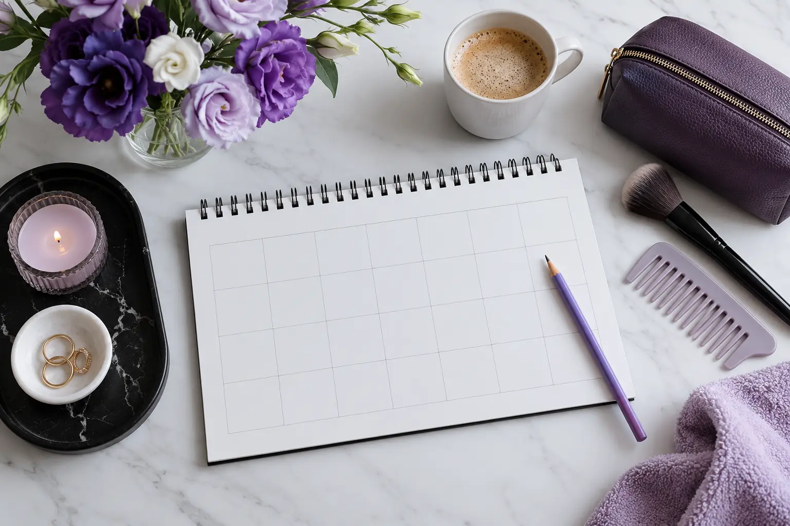

Keli grožio vizitai ir individualūs poreikiai: laiko, vietos bei komforto planas
Autorius: Madbeauty redakcija · Numatyta 2026 m. spalio 18 d. 10:00 (Lietuvos laiku)
Kaip suplanuoti kelis grožio vizitus: sudėlioti laikus, patikrinti atvykimo sąlygas ir įtraukti individualius komforto poreikius.

Derindami kelis grožio vizitus, pirmiausia sudėliokite jų patvirtintus laikus ir numatykite kelionę tarp vietų. Jei svarstote vizitus persidengti, kiekvienas teikėjas turi atskirai patvirtinti, kad toks grafikas konkrečiu atveju įmanomas. Panašūs paslaugų pavadinimai ar ta pati vieta savaime to nepatvirtina.
Nuoseklus planas ar persidengiantys laikai?
Dėliodami vizitus vieną po kito aiškiai matysite, kada baigiasi vienas sutartas laikas ir kiek turite kelionei. Jei teikėjai siūlo persidengiančius laikus, prieš juos pasirinkdami atskirai patvirtinkite kiekvieno vizito pradžią, trukmę, vietą ir praktines sąlygas. Neplanuokite persidengimo vien pagal tai, kad vizitai vyks tame pačiame salone.
Jei vieno vizito eiga ar laikas gali priklausyti nuo kito, dėl konkrečios tvarkos klauskite atitinkamų teikėjų. Šis gidas nevertina atskirų procedūrų suderinamumo ar asmeninio tinkamumo. Kol neturite aiškaus patvirtinimo, kalendoriuje palikite atskirus laikus.
Dienos planą dėliokite iš patvirtintų duomenų
Kiekvienam sustojimui pasižymėkite tai, kas jau sutarta, ir atskirkite tai nuo dar nepatvirtintų detalių:
- Vizitas: paslauga ir sutarta darbų apimtis.
- Teikėjas: pavadinimas ar kontaktinis asmuo ir susitarimo patvirtinimo būdas.
- Vieta: tikslus adresas, įėjimas ir atvykimo instrukcija.
- Laikas: patvirtinta pradžia, numatyta trukmė ir, jei sutarta, pabaiga.
- Perėjimas prie kito vizito: pasirinktas maršrutas, transportas ir jūsų numatytas kelionės rezervas.
- Sąlygos: sutarta kaina, apmokėjimas ir vizito keitimo ar atšaukimo tvarka.
Jei kaina ar trukmė gali keistis pagal darbų apimtį, prieš galutinai susitardami išsiaiškinkite, kas į ją įeina ir kas galėtų ją pakeisti. VVTAT rekomenduoja iš anksto aiškiai sutarti paslaugos apimtį bei kainą ir išsaugoti mokėjimo dokumentą. Tai padeda turėti susitarimo įrašą, bet negarantuoja konkretaus ginčo sprendimo ar pinigų grąžinimo.
Pavyzdys: du vizitai su kelionės rezervu
Toliau pateiktas tik išgalvotas planavimo pavyzdys. Trukmės ir kelionės rezervas yra prielaidos šiam pavyzdžiui, o ne įprasta paslaugų trukmė ar konkretaus teikėjo patvirtinimas:
- 09:00–10:00 – kirpimo vizitas; viena valanda yra pavyzdinė sutarta trukmė.
- 10:00–10:30 – 30 minučių kelionės rezervas, pasirinktas šiam pavyzdžiui; reali kelionė gali užtrukti ilgiau.
- 10:30–11:30 – makiažo vizitas; viena valanda yra pavyzdinė sutarta trukmė.
- Pagal šias prielaidas planas baigiasi 11:30. Tai tik kalendoriaus skaičiavimas, ne tikro užsakymo ar rezultato pažadas.
Prieš naudodami panašų planą savo dienai, pakeiskite pavyzdines trukmes teikėjų patvirtinta informacija ir pasirinkite jums tinkamą kelionės rezervą. Jei adresai ar trukmės dar preliminarūs, atitinkamus laiko blokus taip pat laikykite preliminariais.
Patikrinkite vietą ir atvykimo sąlygas
Tikrinkite konkretų adresą, o ne vien salono ar įstaigos pavadinimą. Įvertinkite kelią pagal pasirinktą transportą ir numatytą paros laiką; maršruto programėlės rodoma trukmė negarantuoja, kad atvyksite būtent tada.
Jei jums svarbu įeiti be laiptų, naudotis liftu, rasti vietą atsisėsti, turėti prieinamą tualetą ar atvykti su lydinčiu asmeniu, šias sąlygas patvirtinkite dėl konkrečios vietos. Vien adreso įrašas jų nepatvirtina. Taip pat iš anksto išsiaiškinkite, ar reikia skambinti atvykus, laukti lauke ar naudoti kitą įėjimą.
Įtraukite bendravimo ir komforto poreikius
Jei jums patogiau susitarti raštu, reikia daugiau laiko persirengti arba norite iš anksto aptarti aplinkos sąlygas, praneškite apie tai planuodami vizitą. Pasidalykite tik ta asmenine informacija, kurios reikia susitarimui. Jei jums svarbu galėti sustoti, keisti eigą ar perplanuoti laiką, išsiaiškinkite, kaip tai būtų suderinta.
Prieš išvykdami sutikrinkite patvirtinimus
Dar kartą peržiūrėkite vizitų seką: ar kiekvienas teikėjas patvirtino laiką ir adresą, ar numatėte kelią ir ar aiškios kainos bei keitimo sąlygos. Užklausos išsiuntimas nėra rezervacijos patvirtinimas. Jei laikas, vieta ar kita svarbi detalė dar nepatvirtinta, laikykite tą dienos dalį preliminaria ir prieš išvykdami susisiekite su teikėju.
Daugiau apie susitarimą dėl paslaugos apimties ir kainos rasite VVTAT rekomendacijose apie grožio paslaugas. Jos nėra individuali teisinė konsultacija.